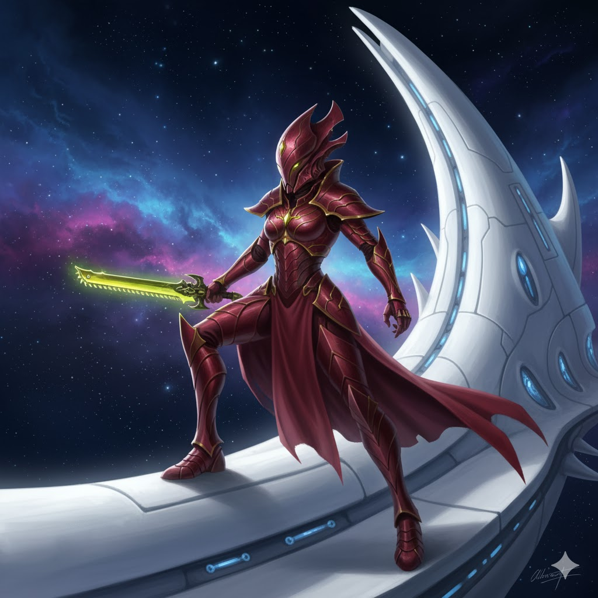

Aeldari

Os Antigos Mestres da Galáxia
Os Aeldari são uma raça antiga que um dia dominou a galáxia. Elegantes, mortais e dotados de habilidades psíquicas poderosas, sua queda deu origem a um dos maiores horrores do universo: Slaanesh.

Caminhos e Exarcas
Para escapar da sede de Slaanesh, os Aeldari seguem os "Caminhos" — disciplinas rígidas de guerra, arte ou profecias. Aqueles que não conseguem deixar o Caminho da Guerra tornam-se Exarcas.
Curiosidades
- Dividem-se em facções: Craftworlds, Drukhari (Aeldari Sombrios) e Harlequins.
- Possuem naves gigantescas chamadas Craftworlds, cidades-nave que viajam pelo espaço.
- Seus videntes podem prever o futuro através das Pedras do Infinito.